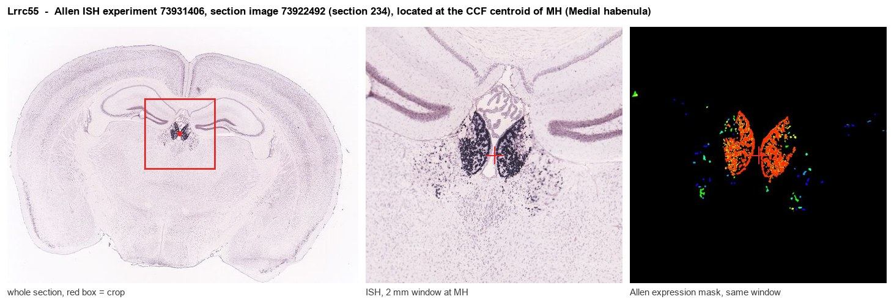
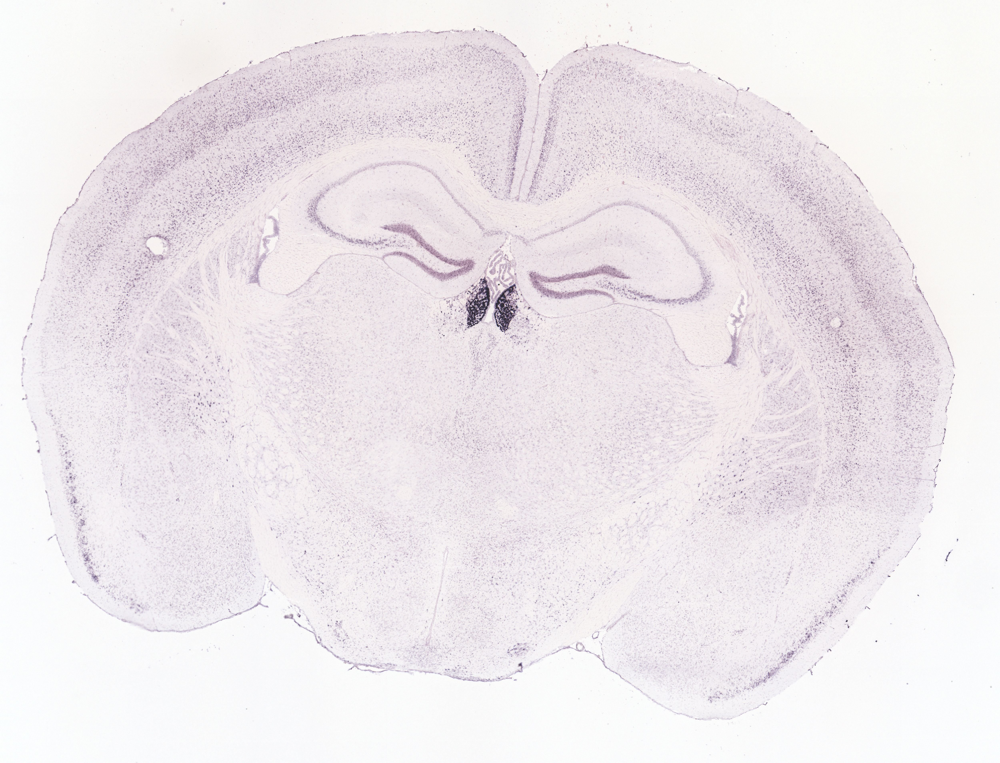
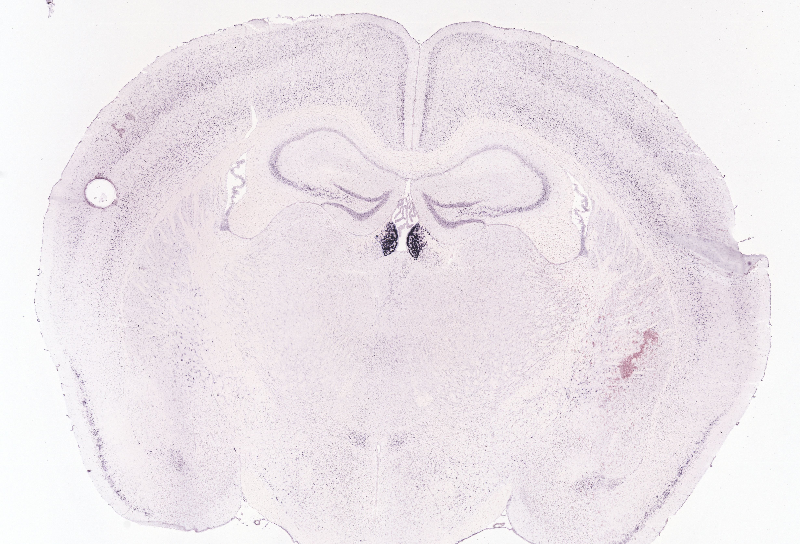
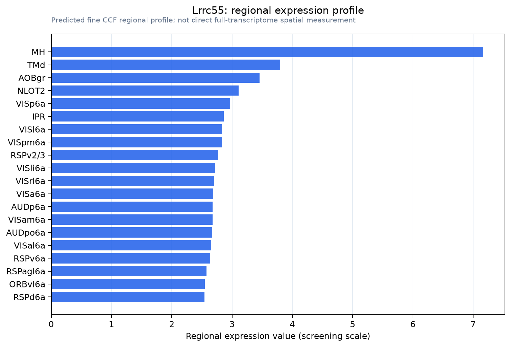

Lrrc55
Leucine-rich repeat-containing protein 55 (BK channel auxiliary gamma subunit LRRC55)
Spatial tier: STRICT_EXCLUSIVE · Class: ION_CHANNEL · Top region: MH (Medial habenula) · Positive regions: 11/554
42.2Discovery Score
42.0Targetability Score
CEvidence grade C
What this means: Lrrc55: predicted fine-region profile is strict-exclusive, with 11 positive regions out of 554 (limit 12); direct spatial validation is required.
Function in MH: evidence, prediction, innovation
- Gene function
- LRRC55 is the gamma-3 auxiliary subunit of large-conductance calcium- and voltage-activated potassium (BK) channels. It shifts BK channel activation by roughly 50 mV toward more negative potentials even without cytosolic calcium, effectively letting BK channels open at normal resting and spiking voltages. It is the only BK gamma subunit expressed in the mammalian nervous system.
- Region function
- The medial habenula is an epithalamic relay whose cholinergic/substance P neurons project almost exclusively through the fasciculus retroflexus to the interpeduncular nucleus. This MHb-IPN axis sets nicotine aversion and withdrawal, fear memory expression, anxiety and negative affect.
- Published in this region
- expression only Zhang et al. 2018 (PLoS One) mapped LRRC55 mRNA across the adult mouse brain by in situ hybridisation and found it richly expressed in the medial habenula, cerebellum and pons, with the medial habenula among the most strongly labelled structures; the authors explicitly noted that its role in MHb is unknown. Guan & Yan 2026 (bioRxiv) showed LRRC55 modulates BK channels to support Purkinje cell plasticity and motor coordination, the only functional neuronal study so far.
- Predicted function
- Prediction: by making BK channels open at low calcium, LRRC55 should sharpen action potentials and deepen the fast afterhyperpolarization of MHb neurons, allowing the high, regular tonic firing rates that drive the IPN. Deleting Lrrc55 is predicted to broaden spikes, slow pacemaking and reduce transmitter release at MHb terminals, with behavioural consequences on anxiety and nicotine withdrawal; paxilline should produce the same acute effect in slices.
- Innovation
- ★★★★★ 5/5 The medial habenula is the strongest LRRC55 signal in the brain and no one has tested what the subunit does there, despite available knockout mice and BK pharmacology.
- Tools
- Lrrc55 knockout mice used by Guan & Yan 2026; BK channel blockers paxilline and iberiotoxin, activator NS1619; in situ hybridisation and RNAscope probes validated in MHb; no LRRC55-selective ligand.
- References
Direct evidence located at the region

Allen ISH experiment 73931406, section image 73922492 (section 234): the section that contains the CCF centroid of Medial habenula according to the Allen image-to-atlas alignment (reference_to_image), with a 2 mm window around that point. Left: whole section, red box = window. Middle: ISH signal. Right: Allen's expression-mask view of the same window. open this image in the Allen viewer
Look it up yourself: Allen Mouse Brain ISH for Lrrc55Allen reference atlas: MH (structure 483)ABC Atlas MERFISH viewer(in the ABC Atlas choose dataset MERFISH-C57BL6J-638850-CCF, colour cells by gene "Lrrc55" or by parcellation_substructure "MH")All genes confined to MH + 3-D brain
Direct spatial evidence
MERFISH REGION LOCATOR

DIRECT ALLEN ISH

DIRECT ALLEN ISH

Regional expression figure

Predicted WMB × fine-CCF profile; not direct full-transcriptome spatial measurement.
Spatial profile
Evidence and specificity
- Evidence status
- PREDICTED_FINE
- Direct sources
- None; predicted localization only
- Exclusive threshold
- 12 positive regions out of 554
- Spatial specificity
- 0.284
- Top-region fraction
- 0.071
- Filter status
- PASS
Interpretation limits
- Cell-type-to-region projection is imputed expression, not direct spatial measurement.
- Adult reference atlases do not establish stability across age, sex, strain, state, or disease.
- Transcript abundance does not guarantee protein abundance or genetic-tool performance.